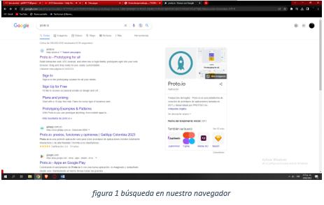
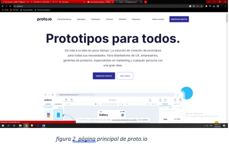
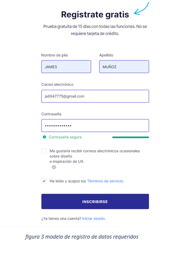
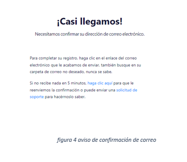
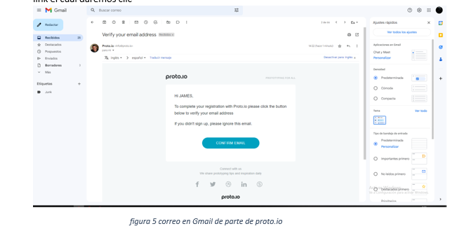
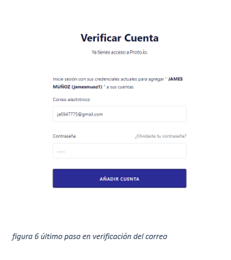
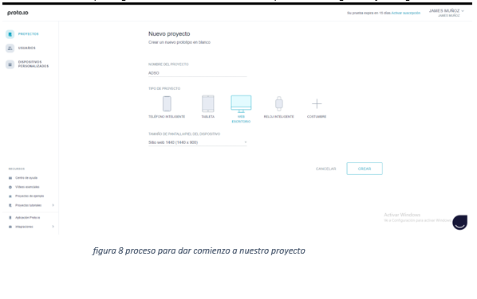
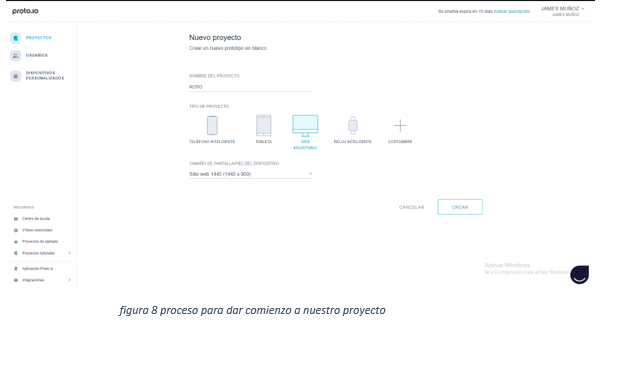
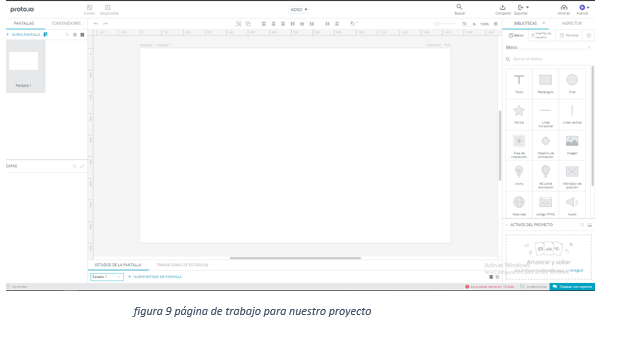
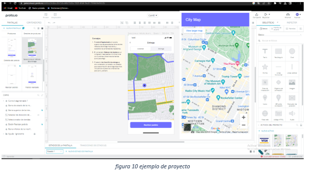

PASOS PARA USAR PROTO.IO
1. En nuestro navegador de preferencia buscamos la aplicación, en este caso PROTO.IO; y luego de la búsqueda procedemos a abrir el primer enlace

2. En su pagina podemos iniciar sesion en caso que tengamos nuestra cuenta, o de lo contrario en Empezar Gratis para crear nuestra cuenta

3. Para registrarnos debemos ingresar nuestros datos, tales com: nombre, apellido, correo y una contraseña la cual va a ser de nuestra imaginacion; y con ello seleccionamos en “inscribirse”

4. Nos lleva a este aviso en el que nos da a conocer que debemos confirmar nuestro correo, y sera de una manera muy sencilla; nos llegara un correo

5. Al dirigirnos a nuestro gmail y abrir el correo correspondiente, nos encontramos con un link el cual daremos clic

6. En este paso diligenciamos la contraseña que creamos en el registro y con esto nos dara avisoque ya estamos listo para ingresar

7. Ya hemos ingresado al menu principal de la pagina de proto.io, podemos dar inicio a crear nuestro propio proyecto

8. Según nuestra necesidad o preferencia, escogemos un diseño, tales como: movil, tablet, web o escritorio, o por algun motivo, tambien nos da la opcion de escoger reloj inteligente

9. Para una muestra, hemos escogido sitio de escritorio en el que nos detalla las multiples opciones de diseño que podemos tomar y tener en cuenta al momento de crear el croquis de nuestro proyecto

La pagina nos da la posibilidad de que observemos algunos pequeños proyectos que se podemos lograr obtener con la plataforma

11. Listo, así de fácil seria diseñar nuestro proyecto
Ventajas y Desventajas
VENTAJAS:
Los prototipos se crean sobre herramientas ligeras y sencillas de usar, que nos permitan llevar las ideas al terreno de lo concreto y proyectar de manera detallada, lo más cercana a la realidad posible, cómo será realizado el proceso de creación de ese producto más adelante.
DESVENTAJAS:
Los prototipos generan o pueden generar otro tipo de problemas si su presentación y discusión con los usuarios no es controlada: puesto que son modelos inconclusos, los usuarios suelen enfocarse en aspectos “superficiales” del prototipo que los pueden dejar inconformes luego de verlos por primera vez.